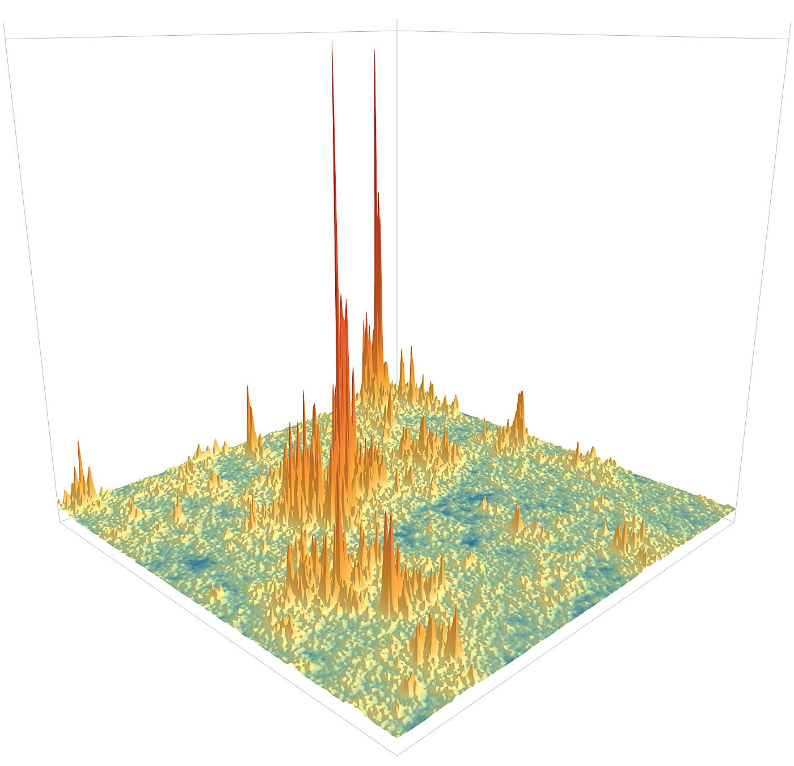
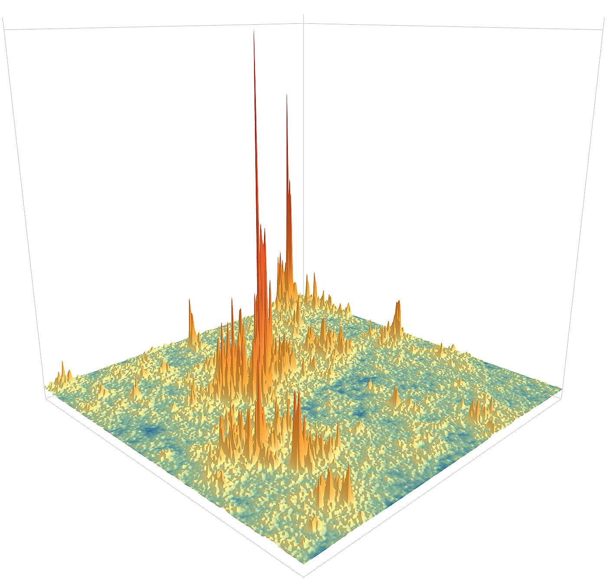

← Back to SHF and KPZ simulations
Robustness to boundary conditions
We ran the SHF simulation twice for the same realization of the disorder, with periodic and with zero Dirichlet boundary conditions. For this sample, the effect is only visible near the edges of the initial view and decreases rapidly as we zoom toward the center.




Both images show the initial 10×10 view of the 12×12 simulation domain, with the same smoothing radius as in the animation (0.2% of the visible width, or ≈ 6.3 lattice units). Some small differences can be seen along the edges. To quantify their effect in the animations, we measure the mass difference as a percentage of the total periodic mass, and the largest pointwise difference as a percentage of the maximum of the periodic field in the same view.
| View | Mass discrepancy | Largest pointwise discrepancy |
|---|---|---|
| Initial view (1.2) | 5.2% | 19% |
| First zoom (1.4) | 0.85% | 0.99% |
| Second zoom (1.6) | 0.19% | 0.23% |
| Third zoom (1.8) | 0.062% | 0.065% |
| Fourth zoom (2.0) | 0.023% | 0.034% |
Both discrepancies fall below 1% after the first zoom step and below 0.04% after the fourth.